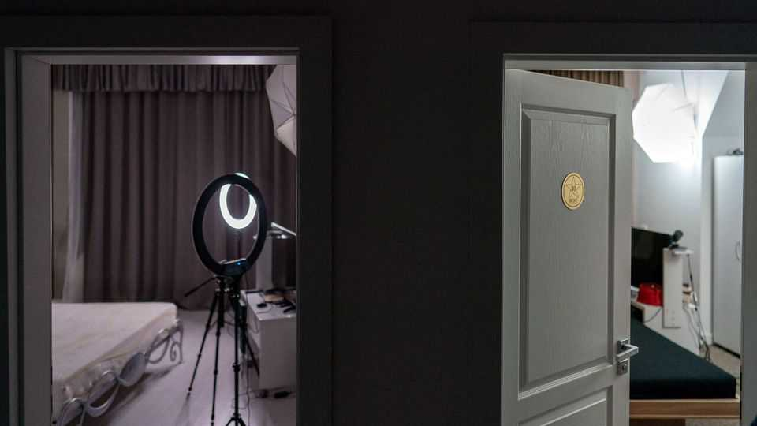

How X-rated content shaped the internet
A peep under the covers of the online porn industry

Nov 12th 2026
Anyone who thinks that modern society is over-sexualised should pay a furtive visit to the National Archaeological Museum in Naples. There, in a gallery known as the gabinetto segreto, or secret room, is evidence that 2,000 years ago the Romans were as excitable as a teenager who has just discovered Pornhub. Statues, vases and frescoes depict every imaginable kind of sex between men and women—as well as gods, swans and goats.
Porn has long been with us. But now “we are living through another sexual revolution,” argues Patricia Nilsson, a Financial Times journalist, in an illuminating new book about a dimly understood industry. Porn has moved from fresco to videotape and to the web, where many of the most popular sites heave with actors faking ecstasy. The internet has changed porn and public attitudes to sex. But, Ms Nilsson argues, porn has also shaped the internet.
X-rated content was arguably closer to the cultural mainstream in the pre-digital era. In the 1970s a handful of blue movies became box-office hits, such as “Deep Throat” (which was not about Watergate). At the end of the 1960s a quarter of American male college students read Playboy—for the articles, naturally. Pornographic images retreated from the mainstream in the 1980s, pursued by Reaganite conservatives on the right and a feminist backlash on the left. Watched on VHS and cable TV, porn became a more hidden pursuit.
As one of the first kinds of entertainment to go online, porn established many of the internet’s ground rules. Section 230 of the Communications Decency Act of 1996 shields tech companies from being sued over users’ uploaded content. It provides the legal foundation for everything from Wikipedia to TikTok. The case that inspired the law? Playboy’s lawsuit against an online forum that pirated its photos.
Porn also pioneered online technology. The tech that people use today to call their parents or dial into the office was developed for distinctly spicier purposes. Strip sites such as Babes4U were among the first businesses to accept credit-card payments online. Allowing viewers to pay “tips” for attention was popularised on porn sites before being adopted by other platforms such as Twitch, which livestreams gaming.
The toxic effects of algorithmic feeds were seen first in adult entertainment, too. Before algorithms pushed social-media users towards more extreme political ideas, they promoted wilder porn. Ms Nilsson draws a comparison between vaccine conspiracy theories and choking during sex: the extreme is what grabs attention and is fanned by algorithms. This “escalates and normalises what already flickers at the edges of our minds”, she writes. (Some of the details are not for the faint-hearted.)
Two things are now changing porn again. One is OnlyFans, a British platform that has scrapped the free, ad-funded model in favour of subscriptions and direct payments to creators. Last year nearly 1m people registered to post on OnlyFans, whose revenue exceeded $7bn. Performers have taken back control: calling the shots on content, taking 80% of the revenue and keeping the copyright. The platform has “revived the adult industry and made it financially possible to be a professional porn star again”, Ms Nilsson writes.
The second change involves AI. This is the biggest potential disrupter—and the biggest gap in Ms Nilsson’s book. She makes the startling claim that AI-made porn is close to overtaking that produced by humans (presumably in terms of volume), then frustratingly draws the curtain.
The subject needs more study. As Ms Nilsson observes, porn has been “treated as a fringe phenomenon, when it was actually mass entertainment”. One British MP, involved in drafting rules for the industry, confesses that she avoided researching one of its leading companies in case her browsing history became public. That hardly spells good governance. Porn’s producers and consumers alike will be better off if the business can be brought out of the gabinetto segreto. ■